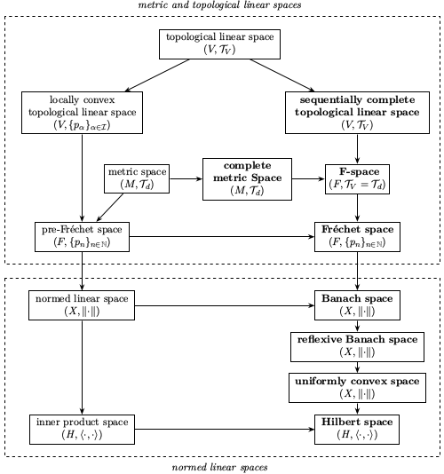

Topics Tree
Impressum
Responsible for these webpages:
Klaus Höflinger, Beethovenstraße 11; 73117 Wangen (Germany)
Email contact: khoeflinger@t-online.de
Main Theorems in Functional Analysis
- Arzelà-Ascoli theorem
- Atkinson's theorem
- Bourbaki-Alaoglu theorem
- closed graph theorem
- closed range theorem
- Rellich-Kondrachov theorem
- Fischer-Riesz theorem
- Fredholm's alternative theorem
- Gelfand-Mazur theorem
- Gelfand-Naimark theorem
- Hahn-Banach theorem
- Hille-Yosida theorem
- Lax-Milgram theorem
- Lumer-Phillips theorem
- Milman-Pettis theorem
- open mapping theorem
- projection theorem
- Riesz-Markov theorem
- Riesz representation theorem
- Riesz-Schauder spectral theorem
- Hilbert-Schmidt spectral theorem
- spectral theorem for self-adjoint operators
- Stone's theorem
Key Concepts in Functional Analysis
- accretive linear operator
- adjoint operator
- Banach algebra
- Banach space
- Bochner space
- bounded linear operator
- Cauchy sequence
- Cauchy problem
- closed linear operator
- compact linear operator
- complemented subspace
- convolution algebra
- contraction semigroup
- C*-algebra
- differential operator
- discrete spectrum
- dual space
- essential spectrum
- finite rank operator
- Fourier transformation
- Fourier-Plancherel transformation
- Fréchet space
- Fredholm operator
- functional calculus
- Gelfand representation
- Hilbert space
- Hilbert-Schmidt operator
- holomorphic functional calculus
- holomorphic semigroup
- Hölder space
- infinitesimal generator
- inner product space
- Laplace transformation
- Lebesgue space \(L^p\)
- linear functional
- linear operator
- locally convex linear space
- metric space
- metrizable topological linear space
- normal linear operator
- normed linear space
- orthonormal basis
- point spectrum
- reflexive space
- resolvent set
- Schauder basis
- self-adjoint linear operator
- sesquilinear form
- Sobolev space
- spectrum
- strongly continuous semigroup
- topological linear space
- uniformly convex space
- unitary linear operator
Sitemap
- Home
- Impressum
- About me
- Mathematical Subject Classification for 46-XX
- my Texts
- Lecture Notes
- Research Articles
- Mathematicians
- History of Functional Analysis
- Textbooks
- Grundlehren der math. Wissenschaften (Springer)
- Graduate Texts in Mathematics (Springer)
- Mathematics and Its Applications (Springer)
- Lecture Notes in Mathematics (Springer)
- Dover Publications
- Graduate Studies in Mathematics (AMS)
- Journals
- Topics Tree
- Nonlinear Functional Analysis
- Dunford & Schwartz: Linear Operators I-III
- Reed & Simon: Methods of Modern Math. Physics I-IV
- Kato: Perturbation Theory of Linear Operators
- Fattorini: The Cauchy Problem
- Rudin's Books on Mathematical Analysis
- Yosida: Functional Analysis
- Riesz & Sz.-Nagy: Functional Analysis
- Functional Analysis
- Topological and Normed Linear Spaces
- Linear Operators and Spectral Theory
- Self-Adjoint Operators
- Semigroup Theory and Evolution Equations
- Internet Seminar on Evolution Equations
- Coercive Sesquilinear Forms
- Distribution Theory
- Nonlinear Functional Analysis
- Key Concepts in Functional Analysis
- Main Theorems
- Linear Algebra
- General Topology
- Measure and Integration Theory
- Complex Analysis
- Partial Differential Equations
- Abstract Harmonic Analysis
Welcome to this web page!
Nowadays functional analysis is one of the most important areas in modern mathematics. It deals with the theory of topological linear spaces and the linear rsp. nonlinear mappings between them. The subject was mainly developed in the first half of the 20th century, and valuable contributions have been done by I. Fredholm, D. Hilbert, S. Banach, F. Riesz, J. von Neumann, L. Schwartz, F. E. Browder, J.-L. Lions and many others.Meanwhile there are a lot of subtopics within functional analysis, and we want to emphasize a couple of them:
- basic theory on topological and normed linear spaces
- duality (adjoint spaces, dual pairs, adjoint operators)
- the calculus of vector-valued functions
- linear operators and spectral theory
- semigroup theory and evolution equations
- distribution theory
- nonlinear functional analysis (monotone mappings, fixpoint and degree theorems)
- applied functional analysis (elliptic boundary value problems, Hilbert space methods, Schrödinger equation, ...)
One can claim without doubt that functional analysis relies on four main columns of other mathematical subjects: linear algebra, general topology, measure and integration theory and complex analysis.
It is my wish that visitors of this website will find inspirating hints and texts for further extended studies.
About me
I wrote my texts in honour of one of my teachers Prof. Dr. Peter Werner (1932-2018), who conveyed my fascination of these beautiful mathematical subjects by his lessons hold in 1984 and 1985 at Mathematical Institute A of University Stuttgart.

my Texts
These are the articles written by myself. The first block contains survey articles on various subjects, whereas the second one presents a couple of original typewriter texts from other mathematicians in modern LaTex style.My articles on functional analysis:
My reprints of articles/books written by other authors:
- Fredholm Operators and the Essential Spectrum, by M.Schechter
- Abstract Harmonic Analysis, based on W. Rudin's book 'Fourier Analysis on Groups'.
My articles on other fields of mathematics:
- Group Theory
- Linear Algebra
- General Topology
- Differential Topology (in preparation)
- Algebraic Topology (in preparation)
- Measure and Integration Theory
- Abstract Harmonic Analysis
Lecture Notes
Internet Seminars:
- Analytic Semigroups and Reactor-Diffusion Problems; 8st International Internet Seminar, 2005.
- Form Methods for Evolution Equations; 18st International Internet Seminar, 2015.
- Lectures on Functional Calculus; 21st International Internet Seminar; by Markus Haase, Kiel 2018.
- Evolutionary Equations; 23st Internet Seminar, 2020.
Other scripts found in the web:
- Evolution Equations Governed by Elliptic Operators; by Wolfgang Arendt, Ulm University.
- From Forms to Semigroups; by Wolfgang Arendt, Lecture Notes Tokyo, Waseda University, 2010.
- Lineare Evolutionsgleichungen; by Delio Mugnolo, Universität Ulm.
- Lecture Notes Evolution Equations; by Roland Schnaubelt.
- Lecture Notes Nonlinear Evolution Equations; by Roland Schnaubelt.
- Spectral Theory; Lecture Notes of Summer Semester 2025; by Roland Schnaubelt.
- Fredholm Operators and the Essential Spectrum; January 1965; by Martin Schechter.
- Scattering Theory; Spring 2008 at Radboud Universiteit; by Eric Koelink.
- Lectures on Elliptic Partial Differential Equations; by J.-L. Lions, 1958.
- Lecture notes on abstract harmonic analysis; by S. Raum, 2017.
Research Articles
This is a list of impressible research articles on functional analysis and mathematical physics:
- Estimates and Existence Theorems for Elliptic Boundary Value Problems; by F.E. Browder, 1959.
- A Distribution-Theoretical Approach to Certain Lebesgue and Sobolev Spaces; by P. Werner, 1970.
International Internet Seminars on Evolution Equations
These events are organized once a year by a couple of universities in Europe.| No. | Title | Year |
|---|
Die Grundlehren der mathematischen Wissenschaften in Einzeldarstellung
The following table is an extract of the complete list of publications in this series, see for example here:| Vol. | Author(s) | Title | Year |
|---|
Dover Publications
The following table lists textbooks in functional analysis and related topics provided by 'Dover Publications':| Author(s) | Title | Year |
|---|
Lecture Notes in Mathematics
The following table partially lists textbooks in mathematical analysis provided by Springer's Lecture Notes in Mathematics (LNM):| Vol. | Author(s) | Title | Year |
|---|
Graduate Texts in Mathematics
The following table lists textbooks in functional analysis and related topics provided by 'Springer GTM Series':| Vol. | Author(s) | Title | Year |
|---|
Graduate Studies in Mathematics
The following table lists textbooks in functional analysis and related topics provided by 'GSM':| Vol. | Author(s) | Title | Year |
|---|
Mathematics and its Applications
The following table lists textbooks in functional analysis and related topics provided by 'Mathematics and Its Applications':| Vol. | Author(s) | Title | Year |
|---|
Linear Algebra
This is a fundamental area in mathematics, which deals with vector spaces and the so-called linear transformations between them. We may divide up the subtopics in linear algebra as follows:- the general theory of rings and fields
- the basic theory of vector spaces (often called linear spaces), including such concepts like linear independency, generator systems, Hamel bases, dimensions, convex sets and so on
- the abstract theory of linear transformations between vector spaces
- the concrete theory of (m,n)-matrices, considered as linear transformations between finite-dimensional spaces
- the theory of linear functionals, dual spaces and determinants
- the theory of algebras, subalgebras and ideals
- the theory of inner product spaces and unitary transformations.
One can for example study Werner Greub's monograph 'Linear Algebra', which was published in Springer's 'Grundlehren der mathematischen Wissenschaften' as vol. 97 in 1958.
Here are my own texts on Linear Algebra and also on Group Theory, which forms a preliminary subject to be studied for understanding linear algebra.
Measure and Integration Theory
The text behind the link below serves as a comprised review on the essentials of measure and integration theory, a fundamental area in modern mathematics with many applications to functional and harmonic analysis and other fields of importance. The content is presented within three parts: the first one describes abstract measure spaces and different kinds of measures, the second one deals with Lebesgue's integration theory and the final one considers measures on locally compact topological spaces.This is the link to the pdf-document regarding our topic: Measure and Integration Theory. It consists of the following three parts:
- measure spaces
- integration theory
- measures on topological spaces
Good textbooks on measure and integration theory are for example:
- Measure and Integration Theory, by Heinz Bauer, deGruyter, 2001
- Measure Theory, by Donald L. Cohn, Birkhäuser, 2013
- Maß- und Integrationstheorie, by Jürgen Elstrodt, Springer, 2018 (in German)
General Topology
This mathematical theory, often also denoted 'point-set topology', deals with the study of limits, continuity and geometric properties of the underlying sets. Rather topology has meaning in its own right, it mainly serves as foundation of further mathematical areas like functional analysis, differential topology, Riemannian geometry and other ones.Topological concepts are required to understand mathematical analysis on a high and abstract level. One may justly claim that analysis today is unthinkable without including the extremely useful notions provided by point-set topology. Here is the link to my article regarding general topology: which consists of three parts, namely:
- topological spaces
- metric spaces
- topological groups
A couple of standard monographs on general topology are available, for example:
- Mengentheoretische Topologie, by Boto von Querenburg (in German)
- Topology; by J. Dugundji, 1989
- Introduction to Topology and Modern Analysis; by G. Simmons, 1963
There are extensions of general topology, denoted differential topology and algebraic topology, respectively. both not having any intersections with our core topic functional analysis of this website. Currently I am also writing introductary texts on them, which soon will be published on this website.
Complex Analysis
is the general theory of holomorphic functions \(f: G \to \mathbb{C}\), where \(G\) is a domain, that is, an open and connect subset of the complex plane \(\mathbb{C}\). The function \(f\) is said to be holomorphic in \(G\), if it is complex differentiable in each point of \(G\), or equivalently, if \(f\) can locally be represented by a power series.Complex analysis has important applications in functional analysis, where we want to mention
- Cauchy's integral formula $$ f(z) = \frac{1}{2 \pi i} \int_{\gamma} \frac{f(\zeta)}{z-\zeta} \, d\zeta $$ with useful extension to a similar formula for bounded linear operators \(A: X \to X\) (Riesz-Dunford formula),
- Liouville's theorem, claiming that a bounded \(\,\) holomorphic function, defined on the entire space \(\mathbb{C}\), is constant.
A highly recommended text containing all these things is Walter Rudin's so-called red book Real and Complex Analysis, especially chapter 10.
Partial Differential Equations
Applied functional analysis is the subject, which provides functional analytic tools and methods to solve linear and nonlinear partial differential equations. We can divide them up roughly into three categories:- stationary boundary value problems governed by an elliptic differential operator
- eigenvalue problems
- evolutional problems
One of my favourite textbooks on PDE theory is An Introduction to Partial Differential Equations written by Michael Renardy and Robert C. Rogers. Especially the chapters 6-10 provide subjects from functional analysis and its applications to the mentioned kinds of problems.
Here are some hints to important textbooks:
- Elliptic Boundary Value Problems, by S. Agmon, 1965
- Partial differential Equations of elliptic type, by C. Miranda, 1970
- Non-Homogeneous Boundary Value Problems I,II,III, by J.-L. Lions & E.Magenes, 1972-1973
- Elliptic and Parabolic Equations, by Z. Wu, 2006
Here are some further links to research articles and scripts, respectively, available in the Web:
- Estimates and Existence Theorems for Elliptic Boundary Value Problems by F.E. Browder, 1959.
- Lectures on Elliptic Partial Differential Equations by J.-L. Lions, 1958 (but with a lot of type errors).
Abstract Harmonic Analysis
Roughly spoken, abstract harmonic analysis is on the one hand side the theory of Fourier transformation on locally compact Abelian groups and on the other side the representation theory of (in general non-Abelian) locally compact groups.I wrote an article on the first topic with the contents
- Basic Theory of Banach Algebras
- Gelfand Representation
- Generalities on Topological Groups
- Locally Compact Abelian Groups
- Abstract Fourier Transformation
- Fourier Transformation in Euclidean Spaces
A useful book on abstract harmonic analysis is Walter Rudin's Fourier Analysis on Groups from 1962. The first chapter deals with the basic theorem on Fourier analysis, and here you will find an article reflecting the content of this chapter as well as the appendix of the book.
Further well-known monographs on abstract harmonic analysis are:
- Abstract Harmonic Analysis (by Lynn Loomis, 1953)
- Abstract Harmonic Analysis I (by E. Hewitt and K. Roos, 1963)
- Abstract Harmonic Analysis II (by E. Hewitt and K. Roos, 1970)
- A Course in Abstract Harmonic Analysis (by G. Folland, 2015)
- Principles of Harmonic Analysis (by A. Deitmar, 2014)
Moreover, the following articles and script can be found in the web:
Summary of all Topics
The main document of this web-page consists of the following chapters:- Topological and Normed Linear Spaces
- Linear Operators in Banach Spaces
- Calculus of Vector-Valued Functions
- Adjoint Spaces and Operators
- Normally Solvable Operators
- General Spectral Theory
- Commutative Banach Algebras
- Linear Operators in Hilbert Space
- Spectral Theory of Self-Adjoint Operators
- Semigroup Theory and Evolution Equations
- Coercive Sesquilinear Forms
- Applications to Linear Differential Operators
Here is the link to this document.
Topological Linear Spaces
The theory of linear spaces endowed with a topological structure forms the fundament of functional analysis. One often speaks of topological linear spaces in this case. The most important subclasses of them are locally convex spaces, Fréchet spaces and finally the well-known Banach and Hilbert spaces.Visit this text to get an overview on these fundamental spaces.
List of textbooks on topological or normed linear spaces:
- Topological Vector Spaces, by A.F. Robinson & W.J. Robinson, Cambridge University Press, 1964
- Topological Vector Spaces I, by G. Köthe, Springer, Grundlehren der math. Wissenschaften Bd. 159, 1969
- Topological Vector Spaces II, by G. Köthe, Springer, Grundlehren der math. Wissenschaften Bd. 237, 1979

Linear Operators and Spectral Theory
The theory of linear operators lies at the heart of functional analysis. One can study linear operators either in the setting of arbitrary topological vector spaces or in the more specific setting of normed linear spaces and especially Banach and Hilbert spaces.Spectral theory deals with the well-posedness of the linear operator equation
where \(\lambda\) is a complex parameter. For every linear operator \(A\) the complex plane is splitted into disjoint sets \(\rho(A)\) and \(\sigma(A)\), called the resolvent set and the spectrum of \(A\). The resolvent set contains all numbers \(\lambda\), for which the operator \(A-\lambda\) is bijective and the inverse operator \((A-\lambda)^{-1}\) proves to be continuous.
My text on this topic and other ones based on operator and spectral theory is available here.
Self-Adjoint Operators
The theory of self-adjoint operators in Hilbert space is one of the earliest and well-elaborated topics in functional analysis and constitutes an extension of that of symmetric linear transformations known from linear algebra.A great portion of motivation to develop an abstract theory of self-adjoint linear transformations came from questions and problems arising in mathematical physics. For example, the mathematical formalism for quantum mechanical systems leads in a very natural way to self-adjoint operators acting in \(L^2(\mathbb{R}^d)\), the Hilbert space of all measurable and square-integrable functions \(f:\mathbb{R}^d \to \mathbb{C}\). Other problems, like the Sturm-Liouville eigenvalue problem, the Dirichlet and the Neumann boundary value problem for the negative Laplacian \(-\Delta\), also lead to the theory of self-adjoint operators in the respective Hilbert spaces \(L^2(I)\) and \(L^2(G)\), where \(I \subset \mathbb{R}\) is a finite interval and \(G\) is a bounded domain in some Euclidean space \(\mathbb{R}^d\).
The linked document below consists of three parts:
- Functional Analysis
- Abstract Theory of Self-Adjoint Operators
- Self-Adjoint Realizations of Differential Expressions
Here is the link to this text.
Semigroup Theory and Evolution Equations
Given a complex Banach space \(X\), a strongly continuous semigroup of bounded linear operators is a mapping \(S:[0,\infty) \to B(X)\), where the following conditions must hold:- \(S(0) = Id_X\),
- \(S(t+s) = S(t) \circ S(s)\) for all \(s,t \geq 0\),
- \(\lim_{t \downarrow 0} S(t)x = x\) for every \(x \in X\).
A great part of semigroup theory deals with the question, under which conditions a given linear operator \(A\) is the infinitesimal generator of a strongly continuous semigroup. In fact, if \(A\) fulfills these conditions, then the related homogeneous Cauchy problem of first order
The Hille-Yosida theorem gives the complete answer to this question. My text on this theorem and its proof can be found here.
Nonlinear Functional Analysis
This subtopic of functional analysis deals with nonlinear mappings \(f:D \subset X \to Y\), where \(X,Y\) are Banach spaces and \(D\) is a linear or convex subset of \(X\).There is a five-volume series of textbooks called 'Nonlinear Functional Analysis and its Applications' and written by E. Zeidler, providing a complete overview on this subject:
| I : | Fixed Point Theorems, Springer, 1985 |
| II/A : | Linear Monotone Operators, Springer, 1990 |
| II/B : | Nonlinear Monotone Operators, Springer, 1989 |
| III : | Variational Methods and Optimization, Springer, 1985 |
| IV : | Applications to Mathematical Physics, Springer, 1988 |
Further monographs on nonlinear functional analysis are:
- Nonlinear Functional Analysis, by K. Deimling, Springer, 1985
- Nonlinear Functional Analysis: A First Course, by S. Kesavan, Springer, 2022
- Nonlinear Functional Analysis, by G. Teschl, 2005
Coercive Sesquilinear Forms
Besides linear operators acting in a Hilbert space, sesquilinear forms play an important role in the abstract solution theory of stationary and evolutional linear equations. A sesquilinear form is a linear mapping \( \mathfrak{a} : H \times H \to \mathbb{C}\), but can also be understood as a linear operator \( {\cal{A}} : H \to H^* \), where \(H^*\) is the conjugate space of \(H\), that is, the linear space of all continuous antilinear functionals \(f: H \to \mathbb{C}\).Mostly one studies sesquilinear forms, which are continuous and coercive at the same time. The latter property means that there is a real constant \( \theta \geq 0 \) such that $$ Re \; \mathfrak{a}(x,x) \geq \theta {\left\lVert x \right\rVert }^2 \; \mbox{ for all } x \in H.$$
See here on my article on coercive sesquilinear forms and their applications to linear partial differential equations. The content of this text is organized as follows:
- Generalities
- Continuous and Coercive Forms
- The Variational Approach
- Operators Associated with H-Ellipic Forms
- Sectorial Forms and Operators
- Self-Adjoint Extensions of Half-Bounded Operators
- Variational Evolution Equations
- Applications
Distribution Theory
A distribution my be regarded as the generalization of a function. The corresponding subject in functional analysis, called the theory of distributions, was developed by Laurent Schwartz in the midth of the 20th century to describe ideas and concepts of theoretical physics by an exact mathematical formalism. Distribution theory can be seen as a direct application of the previously sketched theory including locally convex spaces, continuous linear functionals and transposed linear operators.This is my own document on the theory of distributions with some applications to free space problems of partial differential equations.
I also add a fundamental paper from Peter Werner to this site, in which Lebesgue and Sobolev spaces are introduced by means of distribution theory instead of using Lebesgue's integration theory. See ' A Distribution-Theoretical Approach to Certain Lebesgue and Sobolev Spaces ' for this text steaming from 1970.
To the end I want to add to this site a short list of monographs on distribution theory:
Monographs:
- Distributions, by J.J. Duistermaat & J.A.C. Kolk, Birkhäuser 2010
- A Guide to Distribution Theory and Fourier Transforms, by Robert S. Strichart, Studies in Advanced Mathematics, 1994
- Introduction to the Theory of Distributions, by J.J. M.Joshi & F.G. Friedlander, Cambridge University Press, 1999
F. Riesz & B. Szőkefalvi-Nagy: Functional Analysis
This is one of the first monographs on functional analysis and was published in the fifties. The book contains a good presentation of the spectral decomposition of normal rsp. self-adjoint linear operators in Hilbert space.- Part One: MODERN THEORIES OF DIFFERENTIATION AND INTEGRATION
- Differentiation
- The Lebesgue Integral
- The Stieltjes Integral and its Generalizations
- Part Two: INTEGRAL EQUATIONS. LINEAR TRANSFORMATIONS
- Integral Equations
- Hilbert and Banach Spaces
- Completely Continuous Symmetric Transformations of Hilbert Space
- Bounded Symmetric, Unitary, and Normal Transformations of Hilbert Space
- Unbounded Linear Transformations of Hilbert Space
- Self-Adjoint Transformations, Functional Calculus, Spectrum, Perturbations
- Groups and Semigroups of Transformations
- Special Theories for Linear Transformations of General Type
Rudin's Books on Mathematical Analysis
Walter Rudin was an Austrian mathematician, who emigrated to the U.S.A. before second world war. He wrote a couple of excellent textbooks, and those dealing with mathematical analysis are:Functional Analysis (1973)
Part I: General Theory
- Topological Vector Spaces
- Completeness
- Convexity
- Duality in Banach Spaces
- Some Applications
Part II: Distributions and Fourier Transformation
- Test Functions and Distributions
- Fourier Transforms
- Applications to Differential Equations
- Tauberian Theory
Part III: Banach Algebras and Spectral Theory
- Banach Algebras
- Commutative Banach Algebras
- Bounded Operators on a Hilbert Space
- Unbounded Operators
Real and Complex Analysis (1966)
This is the so-called red Rudin, which can be found in the internet here.Content:
- Abstract Integration
- Positive Borel Measures
- \(L^p\) Spaces
- Elementary Hilbert Space Theory
- Examples of Banach Space Techniques
- Complex Measures
- Differentiation
- Integration on Product Spaces
- Fourier Transforms
- Elementary Properties of Holomorphic Functions
- Harmonic Functions
- The Maximum Modulus Principle
- Approximation by Rational Functions
- Conformal Mappings
- Zeros of Holomorphic Functions
- Analytic Continuation
- \(H^p\) Spaces
- Elementary Theory of Banach Algebras
- Holomorphic Fourier Transforms
- Uniform Approximation by Polynomials
Hector Fattorini: The Cauchy Problem
The Argentinian mathematician Hector Fattorini (1938-2025) wrote a book on the first-order Cauchy problem, where possible solutions are supposed to be in distinguished linear spaces, like Banach spaces or more general distributional spaces.Table of Contents:
- Elements of Functional Analysis
- The Cauchy Problem for Some Equations of Mathematical Physics: The Abstract Cauchy Problem
- Properly Posed Cauchy Problems: General Theory
- Dissipative Operators and Applications
- Abstract Parabolic Equations: Applications to Second Order Parabolic Equations
- Perturbation and Approximation of Abstract Differential Equations
- Some Improperly Posed Cauchy Problems
- The Abstract Cauchy Problem for Time-Dependent Equations
- The Cauchy Problem in the Sense of Vector-Valued Distributions
K. Yosida: Functional Analysis
Yosida's book was published for the first time in 1965 as volume 123 of Springer's 'Grundlehren der mathematischen Wissenschaften in Einzeldarstellung'. The latest edition is the sixth one from 1980. It is referenced from a lot of research articles. But I cannot emphasize this book for self studies -- from my point of view, the sections are organized very chaotically.Contents:
- Preliminaries
- Semi-norms
- Applications of the Baire-Hausdorff Theorem
- The Orthogonal Projection and F.Riesz' Representation Theorem
- The Hahn-Banach Theorems
- Strong Convergence and Weak COnvergence
- Fourier Transform and Differential Equations
- Dual Operators
- Resolvent and Spectrum
- Analytical Theory of Semi-groups
- Compact Operators
- Normed Rings and Spectral Representation
- Other Representation Theorems in Linear Spaces
- Ergodic Theory and Diffusion Theory
- The Integration of the Equation of Evolution

T. Kato: Perturbation Theory for Linear Operators
- Operator theory in finite-dimensional vector spaces
- Perturbation theory in a finite-dimensional space
- Introduction to the theory of operators in Banach spaces
- Stability theorems
- Operators in Hilbert spaces
- Sesquilinear forms in Hilbert spaces and associated operators
- Analytic perturbation theory
- Asymptotic perturbation theory
- Perturbation theory for semigroups of operators
- Perturbation of continuous spectra and unitary equivalence

N. Dunford & J.T. Schwartz: Linear Operators I-III
This series consisting of three volumes is one of the fundamental monographs in functional analysis. To publish them needs in total more than ten years.Part I : General Theory (1957)
- Preliminary Concepts
- Three Basic Principles of Linear Analysis
- Integration and Set Functions
- Special Spaces
- Convex Sets and Weak Topologies
- Operators and Their Adjoints
- General Spectral Theory
- Applications
Part II : Spectral Theory (1961)
- B-Algebras
- Bounded Normal Operators in Hilbert Space
- Various Special Classes of Operators in \(L^p(\Omega)\)
- Unbounded Operators in Hilbert Space
- Ordinary Differential Operators
- Applications to Partial Differential Operators
Part III : Spectral Operators (1967)
- Spectral Operators
- Spectral Operators: Sufficient Conditions
- Algebras of Spectral Operators
- Unbounded Spectral Operators
- Perturbations of Spectral Operators with Discrete Spectra
- Perturbations of Spectral Operators with Continuous Spectra
M. Reed & B. Simon: Methods of Modern Mathematical Physics I-IV
This is a four-volume work by Michael Reed and Barry Simon done in the eigthies of the last century. Especially the first volume is nearly pure mathematics and seems to be one of the best functional analysis text books. But the other volumes are of interest for mathematicians as well, since they offer applications of functional analysis to the basic problems of quantum mechanics.I : Functional Analysis:
- Preliminaries
- Hilbert Spaces
- Banach Spaces
- Topological Spaces
- Locally Convex Spaces
- Bounded Operators
- The Spectral Theorem
- Unbounded Operators
II : Fourier Analysis, Self-Adjointness:
- The Fourier Transform
- Self-Adjointness and the Existence of Dynamics
III : Scattering-Theory
- Scattering Theory
IV : Spectral Analysis
- Perturbation of Point Spectra
- Spectral Analysis
Mathematicians
This is an enumeration of mathematicians with important contributions to functional analysis.| Name | Born | Died | Country |
|---|
History of Functional Analysis
There are a couple of publications on the history of functional analysis:- A Brief History of Functional Analysis
- On the origin and early history of functional analysis, by J. Lindström
- The establishment of functional analysis, by G. Birkhoff & E. Kreyszig, 1984
Online Articles
- History of functional analysis, by J. Dieudonné. North Holland, Vol. 49, 1981
- History of Banach Spaces and Linear Operators, by A. Pietsch. Birkhäuser Verlag, 2007
Books
Textbooks
This is an enumeration of textbooks on functional analysis and related topics.| Author(s) | Title | Publisher | Year |
|---|
Mathematical Subject Classification for 46-XX (Functional Analysis)
The following table forms an extract of the general MSC-2020 catalogue for 'functional analysis'.| Code | Name |
|---|
Journals
This is an enumeration of well-known journals, where mathematical research articles on functional analysis have been published.| Name | Description |
|---|